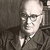

Добро пожаловать на сайт, посвещенный писателям Вологодской области!
Здесь Вы найдете информацию о Ваших любимых писателях и поэтах Вологодской области, как прошедших веков, так и современности, узнаете для себя что-то новое об их биографии, творчестве, личной жизни. Кроме того, может быть, Вы откроете для себя новые имена, и любимых писателей у Вас станет больше.
Много славных имён для отечественной литературы дала Вологодская земля в XIX и XX веках. Свыше 100 литераторов родились на территории нынешней Вологодской области. Многие писатели связали с нашим краем свою судьбу, создавали и создают здесь свои произведения. С 1961 года в Вологде существует писательская организация, первым руководителем которой стал С. В. Викулов.
Приверженность к народным традициям, к живому, сохранившемуся в современном бытовании историческому наследию определила самосознание, творческую основу, жизненный смысл, чувство собственного достоинства каждого отдельного писателя Вологодчины и в целом вологодской литературной школы, заявившей о себе ярко и значительно на литературном и общественном горизонте России.
